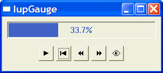

Creates a Gauge control. Shows a percent value that can be updated to simulate a progression. It inherits from IupCanvas.
Ihandle* IupGauge(void); [in C] iup.gauge{} -> (elem: ihandle) [in Lua] gauge() [in LED]The function returns the identifier of the created Gauge, or NULL if an error occurs.
MIN: Contains the minimum valuator value. Default is "0".
MAX: Contains the maximum valuator value. Default is "1".
VALUE: Contains a number between "MIN" and "MAX", indicating the gauge position.
DASHED: Changes the style of the gauge for a dashed pattern. Default is "NO".
MARGIN: Changes the distance from the Gauge’s border to its inside. It is only one number that works in both directions (x and y). Default: 1.
Ex.: IupSetAttribute(mygauge, "MARGIN", "5");TEXT: Contains a text to be shown inside the Gauge. If it is NULL, the percentage value given by VALUE will be shown. If the gauge is dashed the text is never shown.
SHOW_TEXT: Indicates if the text inside the Gauge is to be shown or not. Possible values:
"YES" or "NO". Default: "YES".
FGCOLOR: Controls the gauge and text color. The default is "64 96 192".
FONT: Character font of the text.
SIZE: The default is "170x17".
EXPAND: The default is "NO".
Creates a Gauge with a control bar.
